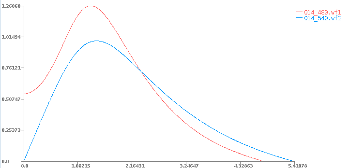
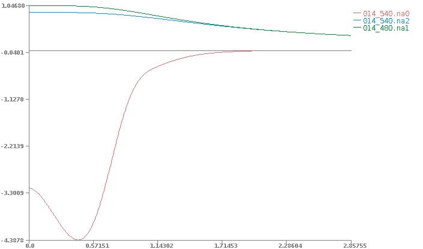

$ git clone https://github.com/fireball-QMD/begin
$ cd begin/begin
$ ls
begin.f90 glean.f90 initial_looprc.f90 looprc.f90 MODULES periodictable3.input periodictable.input VNN
cleanup.com initial.f90 initial.tcl Makefile periodensystem.f90 periodictable9.input RCATMS XC
$ make
Copy the pseudopotential, we use Silicon for this example.
$ cp ../PPfiles/3/014.pp .
$ ./initial.x
Fireball2000
*------------------------------------*
| THIS CODE IS PROPRIETORY, |
| SEE COPYRIGHT INFORMATION! |
*------------------------------------*
Usable only with permission from
the Fireball2004 executive committee.
This program is NOT, under ANY circumstances,
to be transfered to an unauthorized user!
Fireball2000
*-------------------------------------------------*
| |
| Welcome. |
| The Fireball2004 team welcomes you. |
| |
*-------------------------------------------------*
This program helps you to initialize the "begin" part
of the Fireball2000 � package.
You will be asked 4 questions. Hit return for defaults.
Ready.
Set.
Go.
=================== Question No. 1 ===================
Which atom would you like to begin? Your choice:
-------------------------------------------------------
|1 | |2 |
|H | |He|
-------------------------------------------------------
|3 |4 | |5 |6 |7 |8 |9 |10|
|Li|Be| |B |C |N |O |F |Ne|
-------------------------------------------------------
|11|12| |13|14|15|16|17|18|
|Na|Mg| |Al|Si|P |S |Cl|Ar|
-------------------------------------------------------
|19|20|21|22|23|24|25|26|27|28|29|30|31|32|33|34|35|36|
|K |Ca|Sc|Ti|V |Cr|Mn|Fe|Co|Ni|Cu|Zn|Ga|Ge|As|Se|Br|Kr|
-------------------------------------------------------
|37|38|39|40|41|42|43|44|45|46|47|48|49|50|51|52|53|54|
|Rb|Sr|Y |Zr|Nb|Mo|Tc|Ru|Rh|Pd|Ag|Cd|In|Sn|Sb|Te|I |Xe|
-------------------------------------------------------
|55|56|57|72|73|74|75|76|77|78|79|80|81|82|83|84|85|86|
|Cs|Ba|La|Hf|Ta|W |Re|Os|Ir|Pt|Au|Hg|Tl|Pb|Bi|Po|At|Rn|
-------------------------------------------------------
|87|88|89|
|Fr|Ra|Ac| -------------------------------------------
---------- |58|59|60|61|62|63|64|65|66|67|68|69|70|71|
|Ce|Pr|Nd|Pm|Sm|Eu|Gd|Tb|Dy|Ho|Er|Tm|Yb|Lu|
-------------------------------------------
|90|91|92|83|94|
|Th|Pa|U |Np|Pu|
----------------
===> Input desired atomic number:
14
Begin reading main data in periodictable.input
Your chosen element: Silicon
=================== Question No. 2 ===================
We suggest the following electron configuration (This
can of course change depending on your system.)
s^2.00 p^2.00 d^ 0.00 f^ 0.00
Which shells do you want (insert corresponding letters):
[s] - the s-shell
[p] - the p-shell
[d] - the d-shell
[f] - the f-shell
Use the default? Y/N
Y
OK: We USE the default: case nssh = 2
You have chosen 2 shells
You have chosen the s-shell
You have chosen the p-shell
=================== Question No. 3 ===================
Determine electronic configuration.
Electronic configuration (fractionals possible).
The ground state (default) atom is:
S ==> 2.0; P ==> 2.0; D ==> 0.0; F ==> 0.0
Use the default? Y/N
Y
OK: We USE the default.
Electrons in valence orbitals:
1st shell = 2.0000 2nd shell = 2.0000
=================== Question No. 4 ===================
A Fireball� is an atomic orbital which is
confined to a sphere of radius rc, i.e., the atomic
Schrodinger equation is solved with an infinite
potential step. We allow rc(L=0), rc(L=1), etc. to be
different. For simplicity, you might want to take them
to be the same.
We recommend as Fireball� radii:
4.800 5.400 0.000 0.000
Use the default? Y/N
Y
OK: We USE the default.
The cutoff radii that you are using are:
4.800 5.400
=================== Question No. 5 ===================
You have the option of doing an excited state. Do you
to perform a calculation for the excited state? Y/N
N
=================== Question No. 6 ===================
Which exchange-correlation functional do you want to
use? The standard one we have used is the Ceperely-
Alder form as parameterized by Perdew-Zunger
(ioption = 3). Here are the different options:
1 LDA Wigner
2 LDA Hedin/Lundqvist
3 LDA Ceperley/Alder Perdew/Zunger (1980)
4 GGA Perdew/Wang (1991)
5 GGA Becke (1988) X, Perdew (1986)
6 GGA Perdew/Burke/Ernzerhof (1996)
7 LDA Zhao/Parr
8 LDA Ceperley/Alder Perdew/Wang (1991)
9 GGA Becke (1988) X, Lee/Yang/Parr (1988)
10 GGA Perdew/Wang (1991) X, Lee/Yang/Parr (1988)
11 LSDA Vosko/Wilk/Nusair (1980)
12 B3LYP mix exact exchange and BLYP
Use the default? Y/N
Y
=================== Question No. 6 ===================
Last question !
There is a posibility to use additional confinement
potential to get more localized w.f..
The potential has a form:
for r > r0 V = Vo * exp -((rc-r0)/(r-r0))/(rc-r)
else r "<" r0 V = 0.0
(For more detail see e.g. PRB 64, 235111 (2001)).
Do you want to use additional attraction potential to
optimize basis set? Y/N
N
Now write data to begin_input.f90
Thank you for your input.
Now type "make begin.x", then "begin.x".
Be SURE and type make, since this program has
generated a new file "begin_input.f" which must be
recompiled with the source code.
$ make begin.x
$ ./begin.x
You should obtain the wavefunction files:
And the non-neutral atom potential files:
- 014_540.na0
- 014_480.na1
- 014_540.na2

